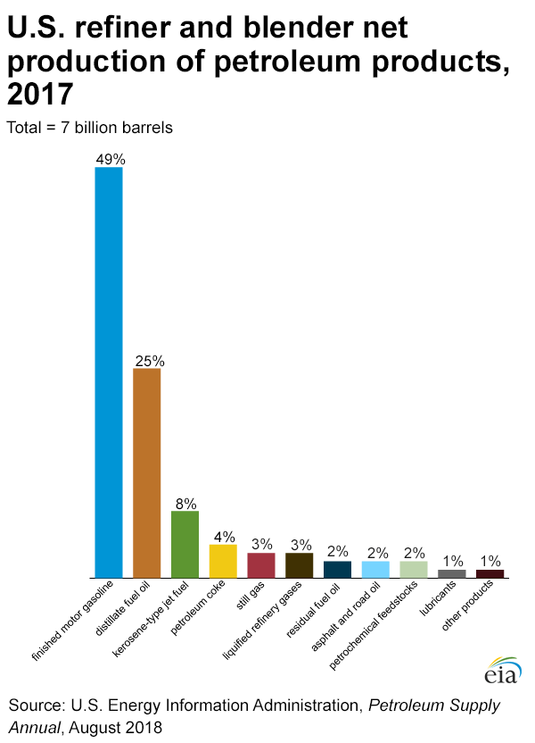

Carbon Dioxide Gas
| Carbon Dioxide | ||
|---|---|---|
|
||
| Info | ||
| The Product of respiration (breathing out) | ||
Why Carbon Dioxide?
Carbon dioxide is one, if not the main, Greenhouse gas people normally think of when asked about climate change. Carbon dioxide is the by-product of many human processes and has been for centuries, since the Industrial Revelution. Carbon emissions from this point onwards have been contiually increased, due to the large amounts of manufacturing processes, power plants and other sources continuously increasing. These emissions, all of which caused by human decision, are often split into three different sources, which are Fossil fuels, Land Use changes and Industrial processes. The percentage of these emissions is shown on the graph below.

Source: Le Quéré, C. et al. (2013). The global carbon budget 1959-2011.
Fossil Fuels & CO2
Fossil Fuels make up 87% of all Carbon emissions from human actions. Fossil fuels are catagorised by how they are produced/found. The main types of Fossil Fuels are Oil and Coal. Oil is found underground, and is formed because of increasing pressure from sand etc. on Ancient plants and animals such as Zooplankton and algae, these areas are called resevoirs and can be both underwater and underground. Oil itself is both used as a raw material and as fuel. Another name for oil is Crude oil. The way oil is gathered on land is through what is called a pumpjack, which is the stereotypic oil gathering station that is seen in most media.
Below is an image of a 3D model I created based off of one of these:

When used as a raw material, Oil goes under a multitude of different processes of refinement, based on what needs to be produced. The products that Oil can be refined into include, but are not limited too, Finished motor gasoline, Kerosene-type jet fuel, Petroleum coke, Hydrocarbon gas liquids, Asphalt and road oil, Kerosene and Finished aviation gasoline.
Below is a graph that shows the rough spread of outputs from Oil:

Coal, However is very different. Coal, like Oil, is found underground and is excavated via mining processes. The types of Coal, unlike Oil, are very vast, with some such as Lignite, Peat and the most evolved type, Anthracite. Coal is produced in the same ways as Oil, but is filled with impurities due to the ways Carbon molecules bond. Since Coal is basically Carbon, the production of it comes from, like Oil, Squashed Ancient plant matter, which contains a high amount of Carbon already (as carbon is a building block of life). As Coal can be found in many different types, the uses of each differ, With types of coal such as Steam Coal being used for power, Coking Coal (yes, it's called that) being used to produce Steel (as steel is the combination of carbon with iron), and it is also a main ingredient of things such as Activated Carbon, Carbon Fiber and Silicon Metal.
Altogether, Both Coal and Oil are taken from long dead sources of life that are buried deep underground and both produce a very, very high amount of CO2. The ways these produce CO2 is via burning them, which releases Carbon which then bonds with the Oxygen in the air, creating the ionic compount CO2, from C and O2.